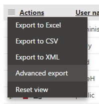
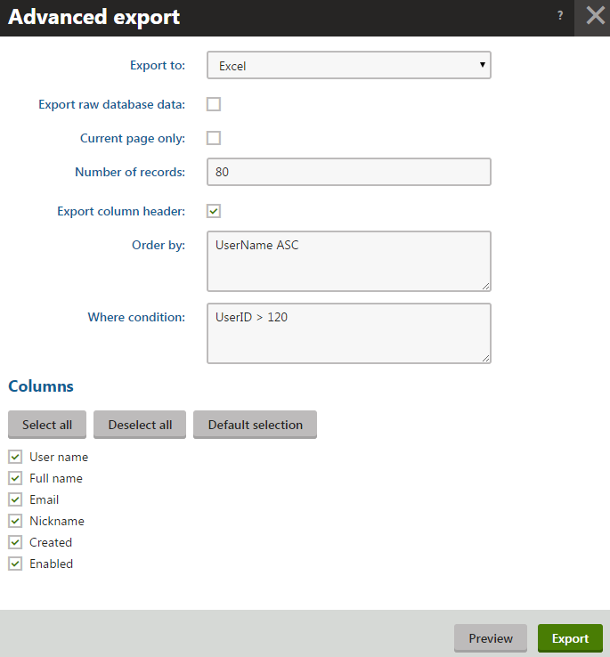
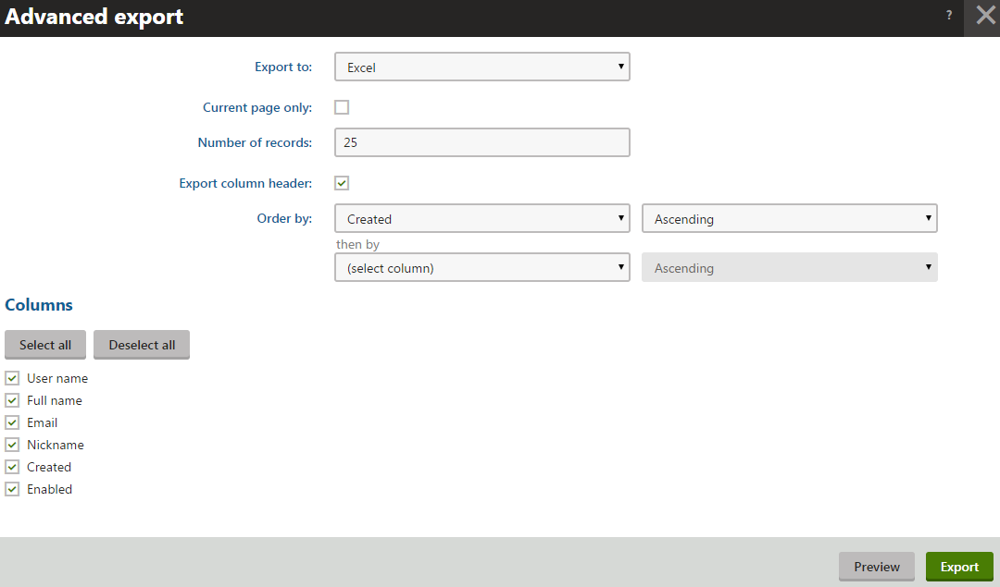

Exporting data from the UI - Advanced export
Clicking the Advanced export option of an object listing interface in Kentico opens one of two possible Advanced export dialogs, depending on the type of user performing the operation.

Using advanced export
By default, the export data includes only the records displayed on the currently selected page in the listing interface. If you disable the Current page only setting, the export loads all available data in the listing (optionally filtered according to the Number of records and Where condition settings and in the order defined by the Order by setting).
Once you have the options adjusted, click Export to export the data to the chosen type of file. Clicking Preview creates an export file with up to 100 records – the preview can be useful to verify the output when exporting a very large number of records.
Advanced export - global administrator
When the Advanced export option is selected by a user with the Global administrator privilege level, the system displays an Advanced export dialog.

Using advanced export as a global administrator
Advanced export - standard user
When the Advanced export option is selected by a standard user who is not a global administrator, the system displays a simplified Advanced export dialog. Options are restricted compared to the global administrator version for security reasons.

Using advanced export as a non-admin user